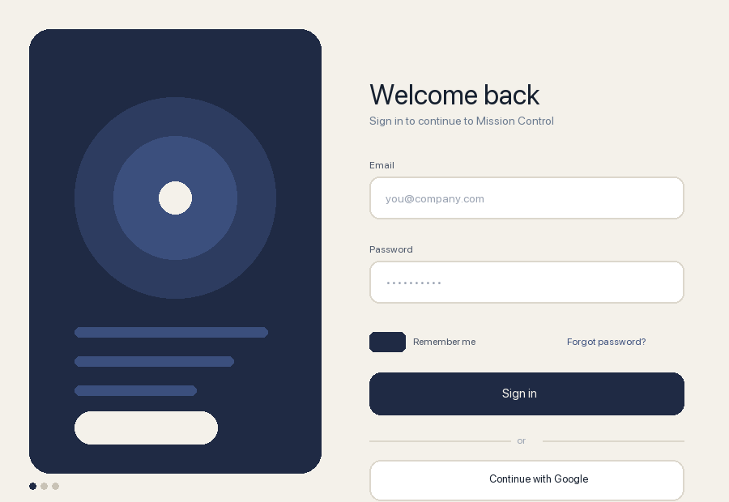
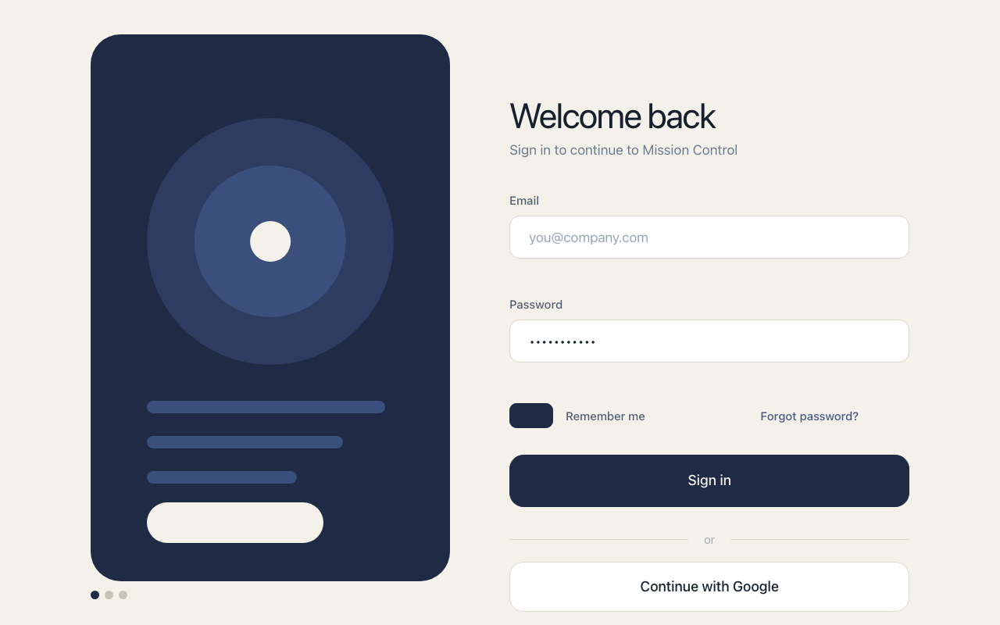

Screenshot in. Working UI out.
A DeepSeek Harness plugin. Paste a screenshot of any interface, run /clone 3, and three agents
rebuild it in parallel — each in its own isolated directory. A live panel shows the reference beside every
attempt, each one rendered and scored. You adopt the page that looks right, and it is already a working page.
you: [paste a screenshot] /clone 3
me: ▸ 3 agents · 3 isolated directories · same reference
▸ reference | lane 1 | lane 2 | lane 3 (live, rendered, scored)
you: [Adopt this one]
me: ▸ ./clone-a91c-lane-2/index.html ← open it, it runs
One real run, not a mock
Reference on the left, the adopted lane on the right. The score is the plugin's own: a coarse-grid picture comparison of the rendered page against the reference.


A second run, a different shape
A small billing card where the builder's own layout spec paid off — one file, no assets, no JS.


What it does that one attempt cannot
Three angles
Measure first, structure first, visual first — the same reference, three working methods.
Isolated lanes
In a repository every lane is a real git worktree on its own branch. Your checkout is never touched.
Rendered and scored
Each delivered lane is screenshotted headlessly and compared with the reference. The best score is suggested; you decide.
Adopted, not exported
One click copies the winning lane into your workspace as plain HTML/CSS/JS. No build step, no server.